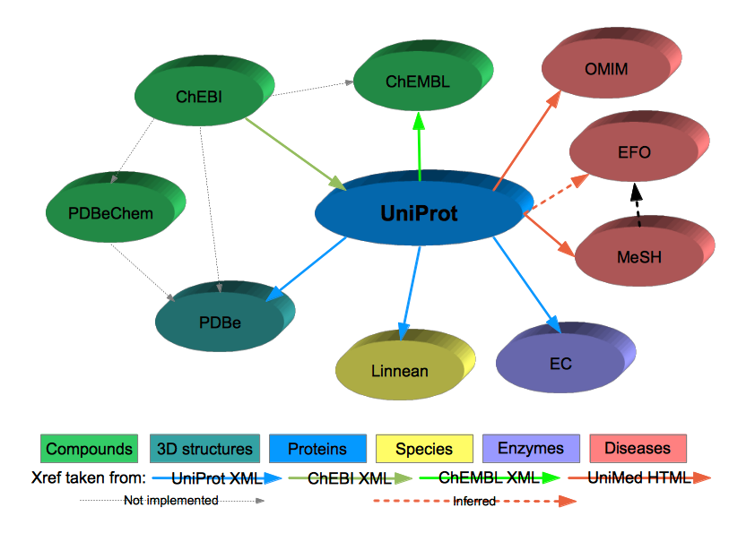

This module creates and queries a database containing basically cross references to/from UniProt entries to other databases used by the Enzyme Portal.
Note the direction of the arrows. The mega-map stores whenever possible the concrete relationship between two entries.